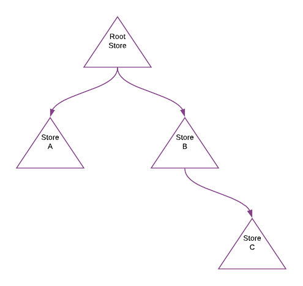
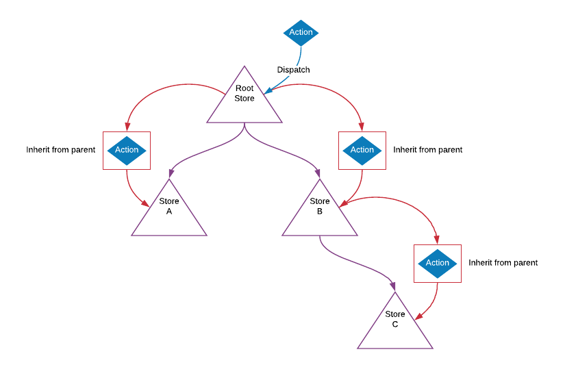
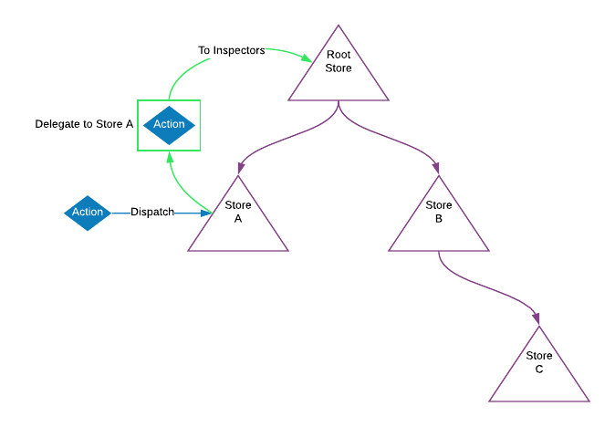
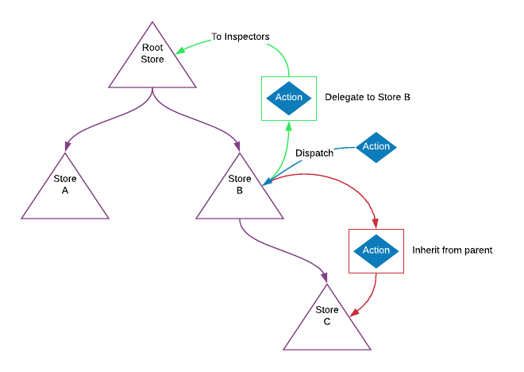
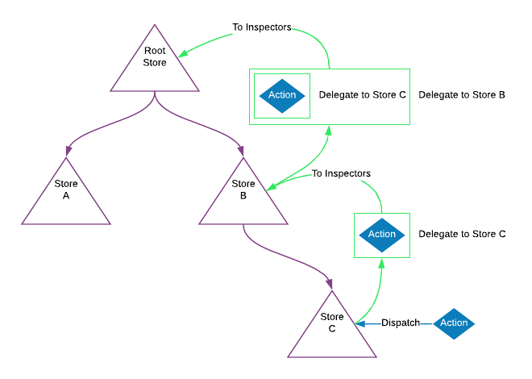
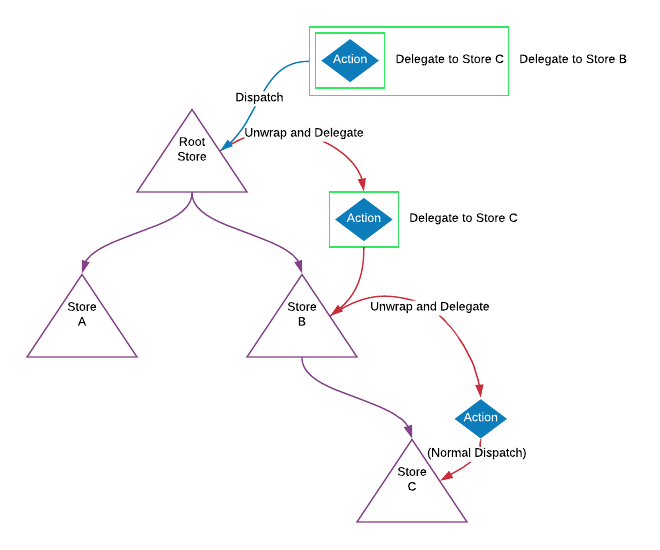
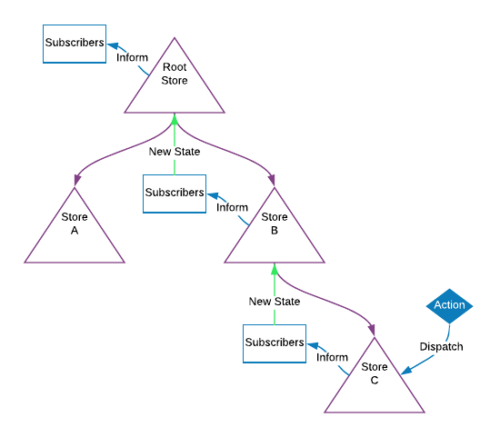
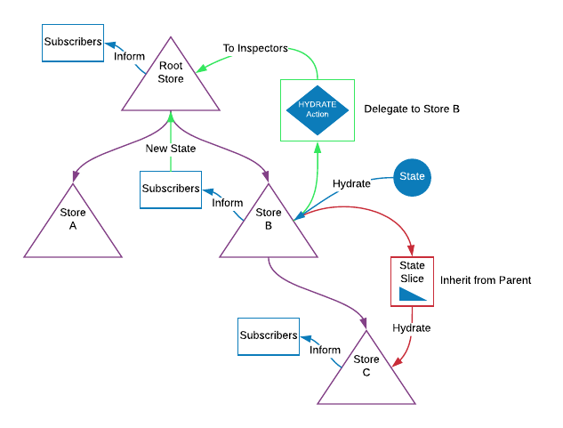

Store Composition
This is easily the coolest part of Zedux. The store composition model of Zedux is unprecedented and extremely powerful.
In this guide, we'll start off talking about the concepts of store composition at a very high level (complete with pictures!). We'll then translate our high level examples into real Zedux stores.
This guide will assume you're at least moderately familiar with the inspector layer of Zedux stores. So read up on that if you haven't.
Behold the awesomeness
Let's work with the following store setup:

To be clear, this means that Store A and Store B appear somewhere in the Hierarchy Descriptor of the Root Store, and Store C appears somewhere in the Hierarchy Descriptor of Store B.
Hopefully your mind is reeling right now. Here are a few questions we'll answer in this guide:
- "What happens if I dispatch an action to the Root Store? Store A? B? C?"
- "How does the Root Store know of a change in Store C?"
- "What if I dispatch an inducer to the Root Store?"
- "What if I hydrate the state of Store B?"
- "How can time travel debugging possibly still work?"
Let's get this party started.
What happens if I dispatch an action to the Root Store?
Zedux wraps all child stores in reactors. Thus an action dispatched to the Root Store will find its way down the reactor hierarchy to each child store's wrapper reactor.
When a child store's wrapper reactor is hit, it dispatches a special INHERIT action to the child store. This INHERIT action is just the original action wrapped in a meta node. Let's get some visuals:

We'll use red arrows to indicate downward flow and a red box to indicate that an action is wrapped in the special
INHERITmeta type.
These wrapped actions behave exactly like normal actions, except that the child store's inspectors can see that the action is inherited. Zedux uses this internally to ensure that the action doesn't propagate back up the chain. But most inspector tasks will want to ignore inherited actions.
Good so far? Let's continue.
What happens if I dispatch an action to Store A?
Hmm. Let's think about this. The Root Store's inspectors need to be notified of the action so that it can implement time travel debugging. The action should be dispatched to Store A normally. If Store A's state changes, the Root Store also needs to be notified of that state change. The Root Store then needs to propagate that change through its own internal state and notify its own subscribers of the change.
Thus there are two things the Root Store needs to do:
1) Inspect Store A's actions
Parent stores register an inspector with their child stores. When an action is dispatched to a child store, the parent's inspector is notified and propagates the notification to the parent store's inspectors. And so on up the chain.
The key here is that the parent store wraps the action in a special DELEGATE meta node before passing it up the chain. This meta node contains all the information the parent store needs to "delegate" the action to the child store. The idea here is that dispatching an action to a child store is exactly equivalent to dispatching a configured DELEGATE action to the parent store.
This allows the Root Store to plug in to all actions dispatched to all child stores in such a way that the Root Store can easily reproduce all state changes across the whole hierarchy. Since this is recursive, even deeply nested stores can have their state easily reproduced by any store up the chain (including itself). This is the key to time travel.
Note that the action is not dispatched to the parent store. Only the inspectors of the parent store (and grandparent store, and great-grandparent store, etc...) are notified.
2) Subscribe to changes in Store A
Parent stores also subscribe to changes in their child stores. When a child's state changes, the parent reconstructs the state hierarchy down the child store's path (that's just basic immutability). The parent store then notifies its subscribers of the state change. And so on up the chain.

We'll use green arrows to indicate upward flow and a green box to indicate that an action is wrapped in the special
DELEGATEmeta type.
Note that Store B and Store C are not touched in the slightest. This is the beastly performance benefit of Zedux.
What happens if I dispatch an action to Store B?
Now we're getting somewhere. Take a wild guess at what happens in this case.
This case is just a combination of the two previous examples:

Note again that Store A is not touched. Beautiful.
What happens if I dispatch an action to Store C?
Ooh. This part's fun. If you were paying attention, you should already know what happens in this case. But this diagram is just too fun:

Remember the key to time travel:
The idea here is that dispatching an action to a child store is exactly equivalent to dispatching a configured
DELEGATEaction to the parent store.
The same goes for grandchild and great-grandchild stores (and so on...). An action dispatched to a store is exactly equivalent to dispatching a configured DELEGATE action to its parent store. It's also exactly equivalent to dispatching a doubly-wrapped DELEGATE action to its grandparent store or a triply-wrapped DELEGATE action to its great-grandparent store. And so on forever.
Zedux takes special care to ensure that every store can reproduce every last bit of its state.
Unwinding
Let's dispatch a doubly-wrapped DELEGATE action to the Root Store and see what happens:

Let's walk through this one:
[action dispatched to Root Store]
Root Store: "Oh, delegate to Store B, huh? You got it."
[Root Store unwraps the "delegate" instruction and dispatches the result to Store B]
Store B: "Oh, delegate to Store C, huh? Fine..."
[Store B unwraps the "delegate" instruction and dispatches the result to Store C]
Store C: "Oh look, a normal action. Inform my inspectors! Call out the reducers and hit up the processors! Long live Zedux!"
Note that the action is dispatched to Store C normally. Store C has no idea where it came from. Thus the action will actually travel back up the inspector chain, being wrapped in DELEGATE meta nodes as normal.
Also note that Store A is still completely untouched. Ah, Zedux.
How does the Root Store know of a change in Store C?
We've answered this one. Recall:
Parent stores also subscribe to changes in their child stores. When a child's state changes, the parent reconstructs the state hierarchy down the child store's path (that's just basic immutability). The parent store then notifies its subscribers of the state change. And so on up the chain.
Thus state changes in a child store are propagated up to parent store subscriptions. I think a simple image will suffice:

What if I dispatch an inducer to the Root Store?
Since an inducer is essentially just a partial state hydration – in fact, an inducer causes the special hydrate action to be dispatched – we'll answer this question with the next one.
Note that when an inducer is dispatched to a parent store, the state update loses its advantage of being an O(1) operation; the parent store will still send the action through its reducer and processor layers in order to inform its child stores of the state update.
What if I hydrate the state of Store B?
The hydration will create the special hydrate action, wrap it in a DELEGATE meta node, and inform the Root Store's inspectors. During hydration, Store C will also be hydrated with the appropriate slice of state. Once the state is updated, the state change in Store B will be propagated to the Root Store.

And so on down and up the chain. Sick, huh?
How can time travel debugging possibly still work?
We've probably answered this satisfactorily, but just to review:
Zedux takes special care to make sure that a store's inspectors are called every time the store's state may change. So store.hydrate(), inducers, and actions dispatched to child stores will all find a way to notify the store's inspectors of a serializable action that can be used to reproduce the state update.
Typically, time travel will be implemented in the Root Store's inspectors. But every store has the capability.
With code
Let's demonstrate a couple of these scenarios with actual Zedux code. We'll make Store A and Store C (our "leaf" nodes) use a simple counter reducer as their root reactor:
reducers/counter.js
import { act, react } from 'zedux'
export const increment = act('increment')
export default react(0)
.to(increment)
.withReducers(state => state + 1)
Now let's create Store A:
stores/storeA.js
import { createStore } from 'zedux'
import counter from '../reducers/counter'
export default createStore()
.use({
counterA: counter
})
And Store C (basically the same thing):
stores/storeC.js
import { createStore } from 'zedux'
import counter from '../reducers/counter'
export default createStore()
.use({
counterC: counter
})
Let's make Store B a little more interesting. We'll nest Store C deep (alright, not too deep) in Store B's hierarchy descriptor:
stores/storeB.js
import { createStore } from 'zedux'
import storeC from './storeC'
export default createStore()
.use({
nested: {
store: storeC
}
})
Now let's glue it all together in our Root Store:
stores/rootStore.js
import { createStore } from 'zedux'
import storeA from './storeA'
import storeB from './storeB'
export default createStore()
.use({
a: storeA,
b: storeB
})
Sweet! Let's take it for a spin:
index.js
import rootStore from './stores/rootStore'
rootStore.getState() /* ->
{
a: {
counterA: 0
},
b: {
nested: {
store: {
counterC: 0
}
}
}
}
*/
Before we get too crazy, let's register an inspector with the Root Store and Store B and let's subscribe to changes on the Root Store:
index.js
import rootStore from './stores/rootStore'
import storeB from './stores/storeB'
rootStore.inspect((storeBase, action) => {
console.log('Root Store inspector received action', action)
})
rootStore.subscribe((newState, oldState) => {
console.log('Root Store state updated', newState)
})
storeB.inspect((storeBase, action) => {
console.log('Store B inspector received action', action)
})
Now we can go crazy:
crazy.js
import { increment } from './reducers/counter'
import rootStore from './stores/rootStore'
rootStore.dispatch(increment())
/*
Logs:
Root Store inspector received action {
type: 'increment'
}
Store B inspector received action {
metaType: '@@zedux/inherit',
action: {
type: 'increment'
}
}
Root Store state updated {
a: {
counterA: 1
},
b: {
nested: {
store: {
counterC: 1
}
}
}
}
*/
We simplified these logs. There will actually be another log and the Store B log will actually have another meta node on it. Store B's inspectors receive an inherited action from the Root Store's reducer layer and an inherited action from the Root Store's processor layer. Usually you'll want to just ignore inherited actions.
How about an action dispatched to Store C?
crazy2.js
import { increment } from './reducers/counter'
import storeC from './stores/storeC'
storeC.dispatch(increment())
/*
Logs:
Store B inspector received action {
metaType: '@@zedux/delegate',
metaPayload: [ 'nested', 'store' ],
action: {
type: 'increment'
}
}
Root Store inspector received action {
metaType: '@@zedux/delegate',
metaPayload: [ 'b' ],
action: {
metaType: '@@zedux/delegate',
metaPayload: [ 'nested', 'store' ],
action: {
type: 'increment'
}
}
}
Root Store state updated {
a: {
counterA: 1
},
b: {
nested: {
store: {
counterC: 2
}
}
}
}
*/
We simplified these logs too. To see the real output, play with this codepen.
Here you can see the nested DELEGATE meta nodes and their data.
Conclusion
Well, that was fun. There are plenty of other scenarios we didn't get to, but this should shed enough light on the store composition model of Zedux to get you started. The store setup we used here is all ready to go in this codepen if you want to have a fiddle.
Apart from the obvious performance benefits, we didn't really cover the motivation behind composable stores. That'll have to wait for another article. For now, I hope you can see that the store tree more closely resembles a component hierarchy in Redux, Vue, Angular, or other such component-based libraries. The ability to create stores whose lifecycle parallels the lifecycle of a component while still maintaining time-traversable state and replayable actions is an exciting new possibility that Zedux has blown wide open.